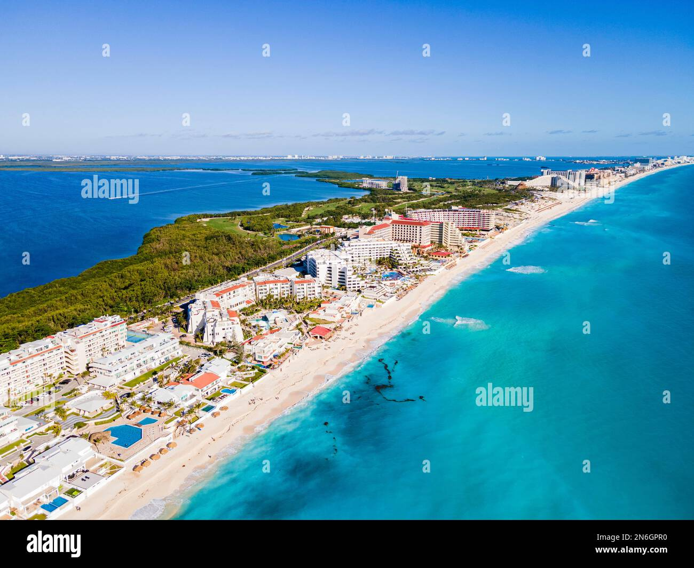

24 de Febrero, 2026
Cancún reporta ocupación hotelera del 83.7% y conectividad récord

Vista aérea de la Zona Hotelera de Cancún
El Caribe Mexicano presenta indicadores positivos en turismo para febrero 2026, consolidando a Cancún como uno de los destinos más atractivos del mundo.
Ocupación Hotelera
- Zona Hotelera Cancún: 83.7% de ocupación (cierre 23 de febrero)
- Centro de Cancún: 67.0% de ocupación
- Afluencia Zona Hotelera: 113,338 visitantes
- Cuartos ocupados: 32,894 en Zona Hotelera
- Acumulado mes a la fecha: 86.7% en Zona Hotelera
Oferta Hotelera
Cancún cuenta con 47,344 cuartos distribuidos en 215 hoteles, incluyendo rentas vacacionales, hostales, moteles y hoteles no asociados.
Operaciones Aéreas
El Aeropuerto Internacional de Cancún registró 517 vuelos el 24 de febrero:
- Llegadas: 259 vuelos (68 nacionales, 191 internacionales)
- Salidas: 258 vuelos (69 nacionales, 189 internacionales)
Conectividad Global
Cancún tiene vuelos directos a 134 destinos en 31 países:
- Norteamérica: 2 países, 44 ciudades (Canadá: 23, Estados Unidos: 21)
- México: 23 ciudades
- Latinoamérica: 11 países, 14 ciudades
- Europa: 17 países, 30 ciudades
Distinciones Blue Flag
Cancún cuenta con 59 distinciones Blue Flag, posicionándose como líder en playas certificadas en América.
Nuevas Rutas 2026
Se han anunciado 17 nuevas rutas aéreas para 2026, incluyendo la destacada conexión directa a Dublín, Irlanda.
Indicadores Económicos
- Gasto promedio por visitante: $837 USD
- Estadía promedio: 6.1 noches
Fuentes: SEDETUR, ASUR, AHCPM&IM
← Volver a Noticias